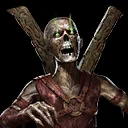
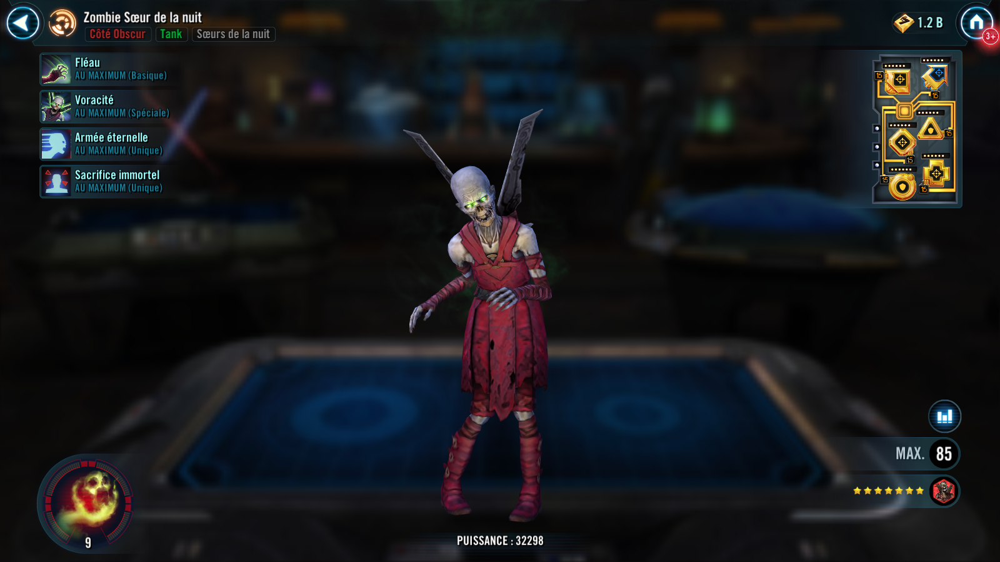
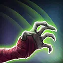

Nightsister Zombie
Vile Nightsister Tank who inflicts Tenacity Down and can't be stopped from reviving endlessly

Vile Nightsister Tank who inflicts Tenacity Down and can't be stopped from reviving endlessly


Deal Physical damage to target enemy and inflict Tenacity Down for 2 turns.
Deal Physical damage to target enemy. If Nightsister Zombie has full Health, Dispel all debuffs on her. All Nightsister allies recover 20% of Nightsister Zombie's Max Health.
At the start of each encounter and at the end of her turn, Nightsister Zombie gains Taunt for 1 turn. When Nightsister Zombie is defeated while any other Nightsister allies are active, she is revived with 100% Health, which can't be prevented.
If Nightsister Zombie survived damage from an enemy attack since her last turn, she gains 50% Speed (stacking) at the start of her turn. When Nightsister Zombie is defeated, she loses 50% Speed (stacking). These effects are neither buffs nor debuffs and combine for a maximum of +100% Speed or a minimum of -100% Speed. If Nightsister Zombie is defeated while at -100% Speed from this effect, she cannot be revived.
Nightsister Zombie can revive after being defeated at -100% Speed from Endless Horde. While a Nightsister ally is active, the first 2 times another Nightsister ally is defeated by an enemy attack, they are revived, recover 100% of Nightsister Zombie's Max Health and Nightsister Zombie is defeated.
When Nightsister Zombie is defeated by this effect, she loses all Protection, dispels all negative Speed effects from Endless Horde and revives with 50% Turn Meter. This effect does not trigger Endless Horde's Speed reduction.